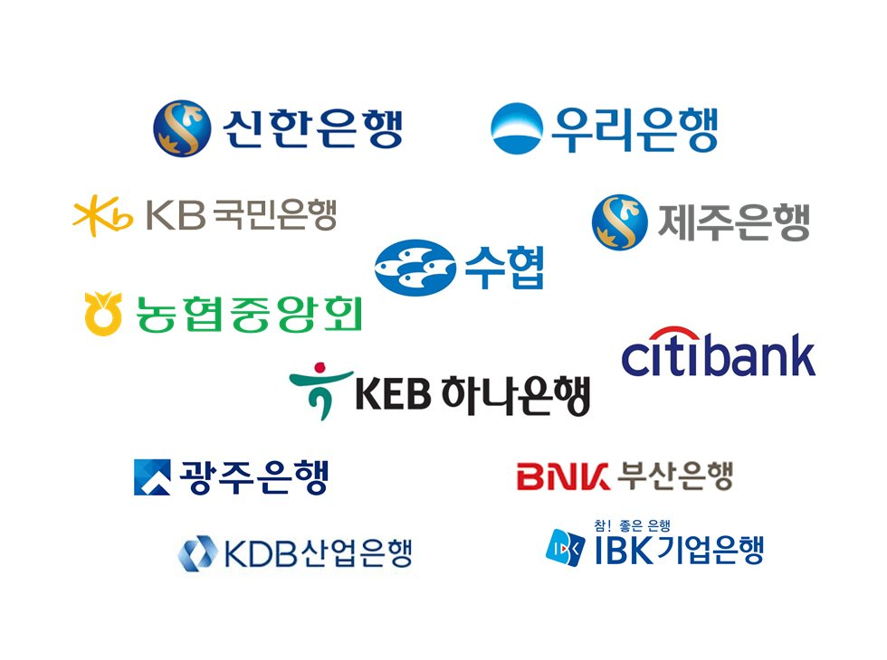

About Me
단국대학교 소프트웨어학과 21학번 32211507 문민제입니다.
금융권 IT 직무를 목표로 프론트엔드와 백엔드 등 다양한 경험을 하고자 노력하고 있습니다.
확고한 목표에 대한 관심으로 신한투자증권 프로 디지털 아카데미 1기 수료생으로 선발되어 관련 분야에 대한 경험을 했습니다.
해당 교육에서 신한투자증권 MTS 개선 아이디어를 주제로 백엔드 역할을 맡아 Django 프로젝트를 수행했었습니다.
이런 경험 덕분에 더 다양한 백엔드 프레임워크를 배우고 싶었고 올해 안에 스프링 프로젝트를 해보자는 계획을 세웠습니다.
계획을 이루기 위해 현재 멋쟁이사자처럼 단국대 11기 백엔드 파트로 활동에 임하며 스프링에 대한 지식을 공부하고 발전하고 있습니다.